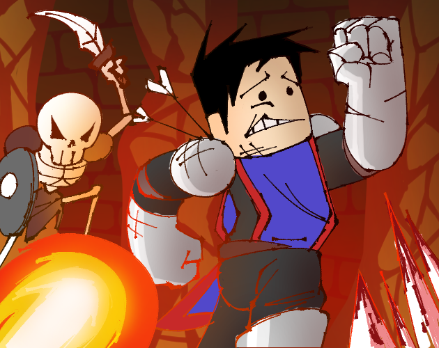
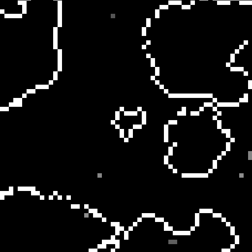

Deeper Caverns [Ludum Dare 48]
Deeper Caverns is a simple isometric Puzzler Game where you must pass puzzles to reach the deepest part of the Dragons Cavern to then defeat the dragon and save the princess which was captured by the dragon.
Deeper Caverns was designed and developed by Flaquero, Syrsa123, Mei and Quartzi. You can play Deeper Caverns on Itch.io as a standalone and/or web build.
[Deeper Caverns on Itch.io][Deeper Caverns ldjam.com]
Resroids [LOWREZJAM 2021]
Resroids is meant to be an old school styled space shooter game. Destroy & dodge asteroids that get in your way and try to stay alive as long as possible.
Resroids was designed and developed by Quartzi in less than 6 hours. You can play Resroids on Itch.io as a standalone and/or web build.
[Resroids on Itch.io]